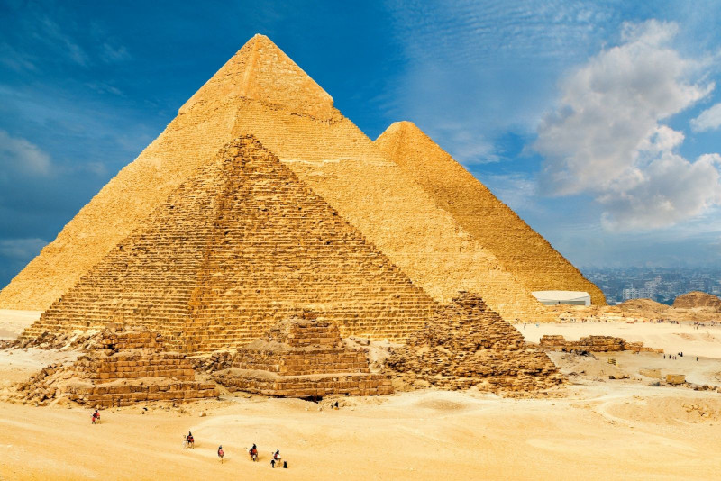
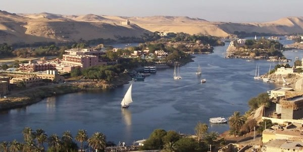

Trésors Antiques
L'Égypte est célèbre pour ses trésors antiques, témoins d'une civilisation remarquablement avancée. Au cœur de cette richesse se trouvent les pyramides de Gizeh, notamment la grande pyramide de Khéops, l'une des sept merveilles du monde antique. Ces monuments colossaux défient le temps et continuent de susciter l'émerveillement avec leur ingénierie remarquable.
Le complexe des pyramides de Gizeh abrite également le Sphinx, une figure mythique gardienne des secrets de l'Égypte ancienne. Ces monuments majestueux, érigés il y a des millénaires, demeurent des symboles emblématiques de la grandeur passée de l'Égypte.
Vie Moderne et Culturel
Au-delà de son héritage antique, l'Égypte offre une vie moderne dynamique et une culture riche. Le Caire, sa capitale effervescente, est le cœur battant du pays, où l'on peut découvrir un mélange fascinant de traditions anciennes et de modernité.
Dans les ruelles animées du Caire, les marchés colorés regorgent de trésors locaux, des épices parfumées aux artisanats exquis. Les mosquées magnifiquement ornées et les palais historiques témoignent du riche patrimoine culturel et architectural de la ville.
Le Nil
Le fleuve Nil, véritable épine dorsale de l'Égypte, a façonné la vie et la culture du pays depuis des millénaires. Une croisière sur le Nil offre une expérience incomparable, permettant aux voyageurs d'explorer des sites historiques emblématiques le long de ses rives fertiles.
De la majestueuse Louxor, avec ses temples impressionnants et la vallée des rois renfermant les tombeaux des pharaons, à la beauté époustouflante d'Abou Simbel, où se dressent les impressionnants temples de Ramsès II et de Néfertari, chaque arrêt révèle une partie de l'histoire fascinante de l'Égypte.
Hospitalité et Gastronomie
Enfin, aucun voyage en Égypte ne serait complet sans découvrir l'hospitalité chaleureuse de son peuple et la délicieuse cuisine égyptienne. Des repas copieux de falafels et de mezze partagés dans des restaurants locaux aux délicieuses pâtisseries sucrées dégustées dans des cafés traditionnels, chaque bouchée offre un voyage culinaire inoubliable.
Voici les plats les plus connus:
- Koshari - Un plat traditionnel égyptien composé de riz, de lentilles, de pâtes, d'oignons frits et de sauce tomate épicée.
- Foul Medames - Des fèves cuites lentement et assaisonnées avec de l'ail, du citron, de l'huile d'olive et des épices, souvent servi au petit déjeuner.
- Moussaka'a - Un plat à base d'aubergines cuites au four et garnies de sauce tomate, d'ail et de viande hachée, souvent accompagné de riz ou de pain.
- Fattah - Un plat festif composé de morceaux de pain pita trempés dans une sauce à base de viande, de riz et d'ail, souvent servi lors de célébrations religieuses ou familiales.
- Mahshi - Des légumes tels que les courgettes, les aubergines ou les poivrons farcis avec un mélange de riz, de viande hachée, de tomates et d'épices, cuits lentement dans une sauce tomate.
- Ta'meya (Falafel égyptien) - Des boulettes frites de pois chiches épicés servies dans du pain pita avec des légumes frais et une sauce tahini.
- Molokhia - Une soupe épaisse à base de feuilles de corète potagère (molokhia) cuites avec de l'ail, du jus de citron et souvent servie avec du riz ou du pain.
- Hawawshi - Un pain farci de viande hachée, d'oignons et d'épices, puis cuit au four ou grillé.
- Kebab - Des brochettes de viande, généralement d'agneau ou de poulet, marinées avec des épices et grillées, souvent servies avec du riz ou du pain.
- Basbousa - Un dessert sucré à base de semoule, de noix de coco, de sucre et de sirop, souvent parfumé à la fleur d'oranger ou à la rose.